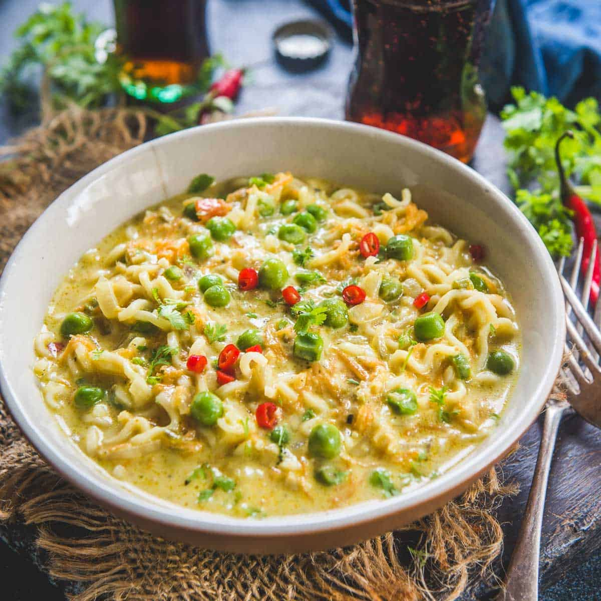

Cheesy Maggi

Description
Maggi recipes do not need any particular introduction. it is perhaps one of the popular staple food for many indians without affecting any culinary dialects. yet there have been many alterations to its basic and standard provided by its manufacturer. it could be a pickle based maggi or it could be a simple vegetable loaded masala maggi. for all these variations, you can add one particular ingredient which would not alter its basic taste, and only improving it. cheese is one such ingredient where you can add it to any spicy masala recipe to make it cheesy one.
Ingredients
- 3 tsp oil
- 2 chilli (finely chopped)
- 3 cloves garlic (finely chopped)
- ½ onion (finely chopped)
- ½ to mato (finely chopped)
- ½ capsicum (finely chopped)
- ½ carrot (finely chopped)
- 2 tbsp peas / matar
- 2 tbsp sweet corn
- 1½ cup water
- 2 slice cheese
- 1 maggi tastemaker
- 1 maggi noodles
- 2 tbsp coriander (finely chopped)
Steps
- firstly, in a large kadai heat 3 tsp oil and saute 2 chilli and 3 cloves garlic.
-
also, add ½ onion and saute until it softens slightly.
- now add ½ tomato, ½ capsicum, ½ carrot, 2 tbsp peas and 2 tbsp sweet corn
- aute for a minute without cover cooking vegetables.
- further, add 1½ cup water, cut 2 slices of cheese and 1 maggi tastemaker
- mix well until the cheese melts completely.
- now add in 1 maggi noodles dipping it completely in water.
- cover and boil for a minute.
- mix in between and continue to cook until the noodles are cooked well.
- add in 2 tbsp coriander and mix well.
- finally, grate the cheddar cheese and sprinkle chilli flakes on cheese maggi before serving.
Et Voila!
Go to Homepage